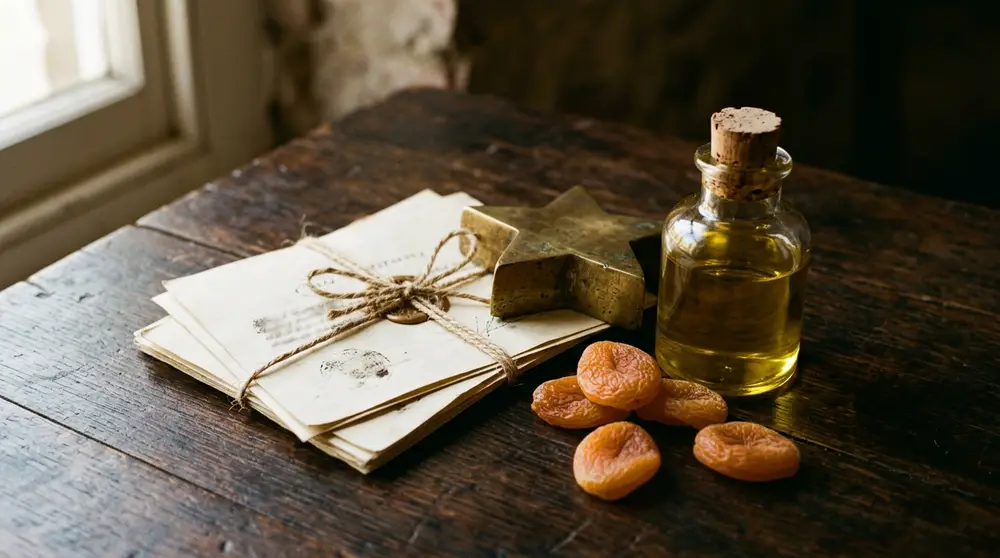
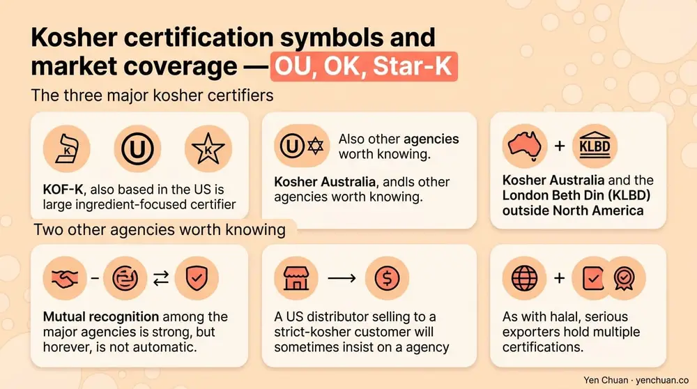
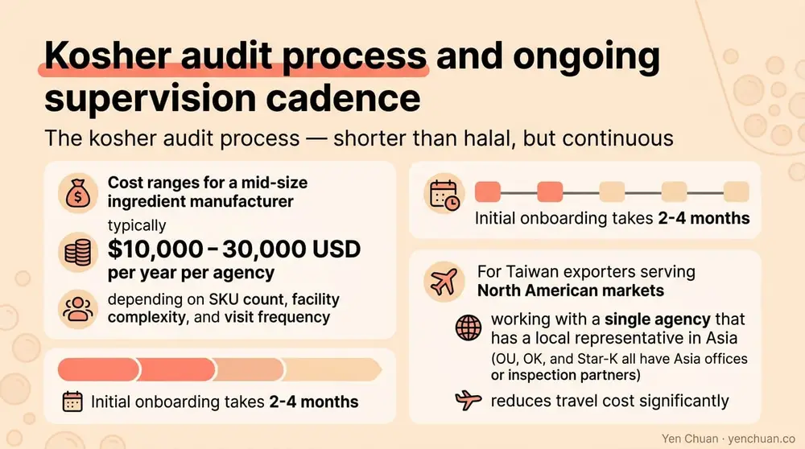

Articles / Business & sourcing
Kosher Bubble Tea Ingredients: Sourcing Guide
2026-02-23 · Sourcing, Industry Trends

Original public content from Yen Chuan. Product claims and specifications remain subject to confirmation by the company.
Kosher-certified ingredients matter for a smaller share of the global bubble tea market than halal, but the markets that want kosher are dense, concentrated, and demanding. Metro New York, Los Angeles, Miami, Toronto, London, Paris, and most major Israeli cities have significant Jewish populations where a bubble tea shop without kosher certification simply will not be stocked by local distributors, served in kosher food courts, or accepted by mall landlords in Jewish-majority districts. This guide explains the three dominant kosher certifiers a bubble tea B2B buyer will encounter — Orthodox Union (OU), OK Kosher, and Star-K — what their symbols actually promise, and how to build a supplier stack that meets the retail expectations of the North American and broader Jewish market.
What kosher certification actually verifies
Kosher law (kashrut) is rooted in biblical dietary rules as interpreted by rabbinic authorities. For packaged food and beverage ingredients, three principles drive most of the certification work:
- Prohibited ingredients. Pork, shellfish, certain fish species, and blood are forbidden. Animal derivatives (gelatin, rennet, certain colorants like carmine, some natural flavors) require careful verification of source.
- Dairy and meat separation. These two categories cannot be produced on shared equipment without strict rabbinical cleaning protocols between runs. A product that contains dairy is "dairy," one that contains meat is "meat," one that contains neither is "pareve" and can be eaten with either category.
- Passover rules. A subset of observant consumers will not eat certain grain-derived ingredients (chametz) during Passover. Products that meet the stricter Passover standard carry an additional marking.
For bubble tea, the ingredient categories that most often create kosher complications are dairy-containing powders, gelatin-based toppings (pudding, some jellies), natural flavor extracts with animal-derived carriers, emulsifiers like mono- and diglycerides when the origin is ambiguous, and non-dairy creamer made in facilities that also produce dairy products. The clean wins are plant-based tapioca pearls, pure sugar, most fruit powders, and sealed loose-leaf tea — but facility cross-contact still requires documented certification.
The Pew Research Center estimates the global Jewish population at about 15.2 million, concentrated in the US (roughly 7.5 million), Israel (about 7 million), and Europe (about 1.3 million). Within those populations, mainstream industry data suggests 20-25% of households regularly buy kosher-certified products, and a smaller but commercially important 8-10% keep strict kosher. Kosher is also significant outside the Jewish market: Muslim consumers often accept kosher-pareve as a halal substitute when no halal-certified option exists, and some lactose-intolerant and vegan shoppers use kosher-pareve as a dairy-free signal.
The three major kosher certifiers
Hundreds of kosher agencies exist globally, but three dominate the North American retail and foodservice market. A Taiwan bubble tea ingredient supplier serving US kosher retail or an international chain with kosher-positioned menus will usually hold one or more of these three.
Orthodox Union (OU) is the largest kosher certifier in the world. The OU symbol is a "U" inside a circle and appears on more than a million packaged products. OU certification is effectively the default for US mainstream retail — if a packaged food product in a US grocery store is kosher, it is most likely OU. For bubble tea ingredient exporters, OU is the symbol with the widest retail acceptance in North America and the most market weight when you are trying to onboard with a US distributor.
OK Kosher Certification is the second-largest US agency and historically popular with bakery, confectionery, and ingredient manufacturers. The OK symbol is a "K" inside a circle. OK tends to be strong with ingredient suppliers because of its technical depth and the fact that many chocolate, dairy, and confectionery ingredient makers have held OK certification for decades. For a Taiwan powder manufacturer, OK is a common choice when selling to US ingredient distributors who serve the baking and food-processing trade.
Star-K Kosher Certification is Baltimore-based and particularly respected in the Orthodox community for its strict standards. The Star-K symbol is a "K" inside a five-pointed star. Star-K certification often signals a higher rabbinical standard, which matters for products sold into the most observant segments — Orthodox day schools, kosher catering halls, and Haredi (ultra-Orthodox) retail channels. It is also respected internationally.
Two other agencies worth knowing: KOF-K (also based in the US) is a large ingredient-focused certifier, and Kosher Australia and the London Beth Din (KLBD) handle markets outside North America. Mutual recognition among the major agencies is strong but not automatic — a US distributor selling to a strict-kosher customer will sometimes insist on a specific agency. As with halal, serious exporters hold multiple certifications.

How dairy, pareve, and Passover markings change a product's market
Every kosher-certified product carries additional letters or markings that change what consumers can do with it.
| Marking | Meaning | Market Impact |
|---|---|---|
| (no suffix) | Pareve — contains neither meat nor dairy | Can be mixed with either at the table |
| D | Dairy — contains dairy or made on dairy-active equipment | Cannot be served with meat meals |
| DE | Dairy Equipment — no dairy ingredients but made on dairy equipment | Some observant consumers accept as pareve with delay |
| M or Meat | Contains meat | Unusual in beverage ingredients |
| P | Passover-certified | Can be sold for Passover observance |
| Pas Yisroel | Bread/grain baked with rabbi's involvement | Required by a strict-observance subset |
For bubble tea, most non-dairy creamers want to be labeled pareve to maximize menu flexibility — a pareve creamer can be used in a meat-meal setting, which matters in kosher catering and some Israeli market use cases. However, many non-dairy creamers are made on dairy-active lines and get a D or DE marking despite containing no dairy ingredients. Spec this up front with your supplier. Our RSPO vs Non-RSPO creamer breakdown covers the palm oil side; kosher status is a separate axis that usually needs separate verification.
For tapioca pearls, the kosher question is mostly about facility cross-contact, since tapioca starch itself is pareve by composition. For powders with natural flavors, you need a letter verifying the flavor carrier and origin.
The kosher audit process — shorter than halal, but continuous
Kosher certification is structurally different from halal. Instead of a one-day audit followed by an annual re-inspection, kosher certification typically involves a continuous relationship with a Mashgiach (kosher supervisor) who may make periodic unannounced visits, plus rigorous ingredient-level documentation for every raw material.
The certification onboarding process usually follows this pattern. The facility submits a complete ingredient list and formulation for every SKU. The certifying agency reviews each raw material supplier — every ingredient itself must come from a kosher-certified source, and the agency either accepts the upstream certification or requires an upgrade. An initial on-site inspection verifies equipment segregation, cleaning protocols, and labeling. If everything passes, a contract is signed specifying scheduled and surprise Mashgiach visits, annual renewal, and fees.
Ongoing supervision is the part that differs most from halal. A kosher-certified facility can expect periodic unannounced Mashgiach visits, ingredient changes requiring prior written approval, new SKUs requiring separate review, and annual re-certification with updated documentation.
Cost ranges for a mid-size ingredient manufacturer are typically $10,000-30,000 USD per year per agency, depending on SKU count, facility complexity, and visit frequency. Initial onboarding takes 2-4 months. For Taiwan exporters serving North American markets, working with a single agency that has a local representative in Asia (OU, OK, and Star-K all have Asia offices or inspection partners) reduces travel cost significantly.

How to source kosher bubble tea ingredients from Taiwan
Not every Taiwan bubble tea ingredient manufacturer holds kosher certification — it is less common than halal because the target markets are smaller and more concentrated. For buyers who need kosher, the practical steps are:
Ask early during supplier onboarding whether the specific SKU you want is on a kosher certificate, and request the scan. Verify the certificate on the certifier's website — all three major US agencies run public lookup portals. Confirm the D/DE/pareve status; pareve gives you maximum menu flexibility for kosher catering. Keep a PDF of the current certificate plus verification screenshot in your FSVP-adjacent supplier file. Re-verify annually, because expiry dates matter and lapsed certifications break retail and foodservice placements overnight.
For chain-level buyers, aligning your kosher certifier with your distributor's preference matters. Many US kosher distributors default to OU or OK; Orthodox-market-focused distributors often require Star-K. Check with your target distributors before locking a supplier.
Our milk tea supplier vetting guide covers the broader supplier qualification process that applies to any certification requirement, kosher or otherwise.
Authority Citations
- Orthodox Union — OU Kosher
- OK Kosher Certification
- Star-K Kosher Certification
- KOF-K Kosher Supervision
- Pew Research Center — Jewish Population Data
About Yen Chuan
Yen Chuan has been at the heart of Taiwan's bubble tea industry for over 20 years, supplying premium powders, syrups, tapioca pearls, and tea leaves to thousands of boba shops worldwide. With an in-house R&D lab and a commitment to quality ingredients, Yen Chuan is more than a supplier — we're your partner in the boba business. For customers serving US and European kosher markets, we work with leading kosher agencies to qualify SKUs on demand, with standing documentation packs for repeat buyers.
Sourcing kosher bubble tea ingredients?
Planning a kosher-certified menu for a US, Israeli, or European chain? Contact our team to confirm kosher availability on specific SKUs, or browse our full catalog — we ship worldwide from Taiwan and can pair ingredient supply with kosher documentation for chain-grade accounts.
Frequently Asked Questions
Q: What is the difference between OU, OK, and Star-K kosher certification? A: OU (Orthodox Union) is the largest and has the widest US retail acceptance. OK Kosher is strong in the ingredient and baking industry. Star-K is often preferred by Orthodox and Haredi consumers for its stricter standards. All three are widely recognized; mutual acceptance is common but not automatic among strict-observance buyers.
Q: What does "pareve" mean on a kosher label? A: Pareve means the product contains no meat and no dairy ingredients, and is not made on equipment used for either. Pareve products can be served at meat meals or dairy meals — an important flexibility for kosher catering and chains. A "D" on the label means the product contains dairy or is made on dairy-active equipment.
Q: Does every ingredient in a kosher bubble tea need to be certified? A: Yes. A kosher-claimed finished product must use kosher-certified inputs at every level, not just on the final blending line. This is why verifying upstream supplier certifications matters — a powder blender cannot claim kosher status if its raw ingredient supplier is not also certified.
Q: How much does kosher certification cost for a Taiwan ingredient supplier? A: Typical costs run $10,000-30,000 USD per year per agency for a mid-size facility, depending on SKU count and visit frequency. Initial onboarding takes 2-4 months. Adding a second agency (for example OU plus Star-K) is often 40-60% of the original cost because the inspection overlap is significant.
Q: Can Muslim consumers buy kosher-pareve products as a halal alternative? A: Many do, as a fallback when no halal-certified option is available. Kosher-pareve products are free of meat and dairy, which covers most halal concerns — but alcohol-based flavor carriers allowed under kosher law may not be halal. Verify ingredient-level details rather than assuming kosher status implies halal compliance.